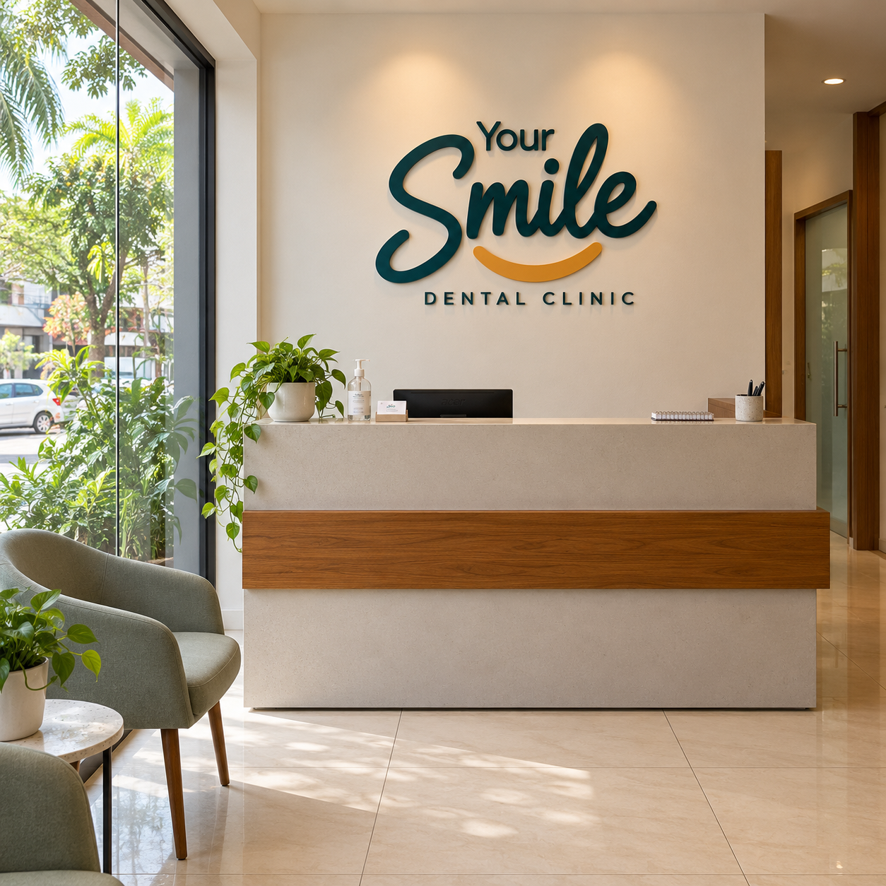

General dentistry
Everyday care to help keep your teeth and gums healthy, with time to discuss your questions.
Explore general dentistry ↗Personal dental care for every generation. Two welcoming clinics in Kochi, with time to listen and care that feels like you.

A calm space for your careListen. Explain clearly.
Care thoughtfully.
A little understanding makes a big difference.
We’re here to listen, explain clearly, and help you
take the next step at the clinic that suits you.
From everyday dental health to restoring your smile, start with a conversation about what you need.
Everyday care to help keep your teeth and gums healthy, with time to discuss your questions.
Explore general dentistry ↗Explore the possibilities for your smile, with clear explanations and a plan that feels personal.
Explore smile care ↗Talk through options for damaged or missing teeth, with comfort and everyday function in mind.
Explore restorative care ↗A visit to the dentist is personal. Whether you’re coming in for a check-up or exploring a treatment, we believe the first step should be getting to know you.
Space for your questions, your concerns, and what matters to you.
Understand your options before deciding on your next step.
A considered approach that respects your comfort and preferences.
Choose the location that works for you. The same thoughtful approach, in your neighbourhood.
Chittoor Road, South Chittoor
Kochi, Ernakulam 682027
Near Chittoor Sree Krishnaswamy Temple
Led by Dr. Anna Thomas
Cheranalloor, Kochi
Call us for the exact address and current hours.
Meet the dentists at Smile Dental Care in South Chittoor.
Registration No. 20081
BDS from RGUHS. Registered with the Kerala and Karnataka dental councils.
View profile & book ↗Registration No. 24439
Chief Dental Surgeon at Smile Dental Care, South Chittoor.
Arrange a visit ↗Plan your dental visit before you travel. Our team welcomes enquiries from the Gulf and the Maldives.
Information in Arabic and English to help you plan your visit from the Gulf.
Explore Gulf patient information ↗PATIENTS FROM THE MALDIVESStart a conversation about your care, clinic choice and appointment before travelling.
Explore Maldives patient information ↗A space for your experiences with our team.
The team took time to hear my questions and explain the next steps. I felt comfortable talking about what mattered to me.
I appreciated having space to ask questions and understand the options before deciding how to move forward.
A friendly conversation and a clear explanation made the visit feel more familiar and easy to follow.
Illustrative reviews · fictional names, AI-generated portraits and sample feedback for design preview. These are not real patient testimonials.
Treatment starts with an assessment. Your dentist will explain what is appropriate for you.
Dental check-ups, oral prophylaxis and care for children. Discuss your everyday oral health and build healthy habits.
Choose a clinic ↗Explore braces, aligners, smile correction and composite restorations with a consultation about your goals.
Choose a clinic ↗Discuss root canal treatment, crowns, bridges and dental implants. Your dentist can guide you through suitable options.
Choose a clinic ↗These services are listed for Smile Dental Care. Please confirm treatment availability at your preferred branch.
Choose a clinic from any booking button. Smile Dental Care has an online booking page. For Your Dental Clinic in Cheranalloor, choose the call option to arrange your visit.
Please call your clinic to confirm current hours before travelling. We’re confirming the published timings.
Let the clinic know when arranging your visit. You can discuss your concerns and comfort needs with the team.
Costs depend on your needs and treatment options. Ask for a care plan and cost estimate before deciding.
Choose a clinic. Let’s start with a conversation.